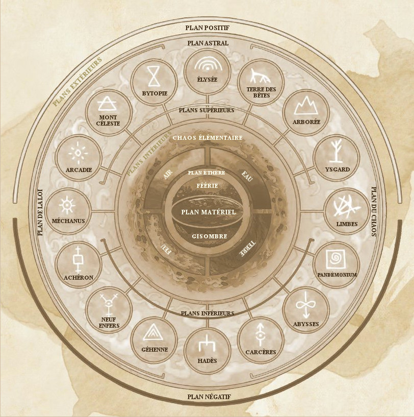

Les plans
Les plans d'existence sont différentes réalités liées les unes aux autres. Exception faite de rares points de connexion, chaque plan constitue un univers doté de lois. Ils se décomposent en un certain nombre de types : le plan matériel et ses reflets, les plans transitifs, les plans intérieurs, les plans extérieurs et les demi-plans.

Plan matériel
Le premier des plans est le monde dans lequel les humains et autres mortels naissent et vivent, et qui n'est souvent connu que par le nom du monde. Ainsi, les sages de Faerûn appellent leur monde Abeir-Toril. Mais quand on parle de plans, le monde correspond au terme de plan matériel. À ses côtés s'étendent ensuite ses reflets, les plans parallèles : la Féerie et la Gisombre. Les plans parallèles sont d'étranges copies du monde matériel. Le monde est fait de mers et de montagnes et l'on retrouve ces espaces et reliefs dans les plans parallèles, mais il ne s'agit cependant pas de reproductions exactes. Une cité humaine prospère du monde des mortels pourra ainsi donner un vallon boisé en Féerie et une ruine hantée en Gisombre. Il semblerait que la version féerique d'un site du monde naturel soit en fait un souvenir immaculé de ce qu'il était au tout début, tandis que la Gisombre le représente tel qu'il sera quand son peuple aura disparu et qu'il n'en restera que des ruines.
La Féerie
 La Féerie (parfois aussi connue sous le nom de plan des Fées) est le double verdoyant et sauvage du monde des mortels. De vertigineuses forêts s'y étalent sur des milliers de lieues. Des prairies ambrées parfaites et vallonnées séparent des montagnes dont les pics enneigés disparaissent dans les nuages. Des mers vert émeraude, turquoise et jade déferlent sur des plages sans fin. Le bleu pur du ciel, inconnu du monde matériel, abrite des orages dont la masse nuageuse noire comme le charbon bouillonne sous l'effet de vents violents et de pluies torrentielles. Ici, l'énergie arcanique vrombit dans le moindre arbre, le moindre caillou. Toute existence est magique. La Féerie est un plan parallèle aux dimensions et à la topographie semblables au monde des mortels découpée en domaine, chacun d'eux sous le contrôle d'un archifée.
La Féerie (parfois aussi connue sous le nom de plan des Fées) est le double verdoyant et sauvage du monde des mortels. De vertigineuses forêts s'y étalent sur des milliers de lieues. Des prairies ambrées parfaites et vallonnées séparent des montagnes dont les pics enneigés disparaissent dans les nuages. Des mers vert émeraude, turquoise et jade déferlent sur des plages sans fin. Le bleu pur du ciel, inconnu du monde matériel, abrite des orages dont la masse nuageuse noire comme le charbon bouillonne sous l'effet de vents violents et de pluies torrentielles. Ici, l'énergie arcanique vrombit dans le moindre arbre, le moindre caillou. Toute existence est magique. La Féerie est un plan parallèle aux dimensions et à la topographie semblables au monde des mortels découpée en domaine, chacun d'eux sous le contrôle d'un archifée.
Les créatures originaires de la Féerie, tels les dangereuses guenaudes et les farouches dryades, sont chargées de l'énergie mystique de ce plan. Mais si elle est une bénédiction pour certains, elle en pervertit d'autres. Tout comme leur environnement, les créatures féeriques qui résident sur ce plan tendent à se placer dans les extrêmes. Celles qui sont bonnes, nobles et justes protègent le monde naturel et les mortels auxquels elles choisissent d'accorder leur faveur. Celles qui sont mauvaises incarnent le déchaînement de l'instinct le plus primaire sous le signe du sang, des griffes et de la colère. Les créatures de Féerie peuvent être avenantes, cruelles, nobles, monstrueuses et féroces, et souvent tout cela à la fois. On y trouve des elfes, des satyres, des pixies, des feux follets, mais aussi des chiens esquiveurs, des dragons féeriques, des sylvaniens, des licornes, ainsi que des gobelins, des ogres et des géants.
La Gisombre
 La Gisombre est l'écho ténébreux du monde mortel, un lieu de ténèbres impénétrables aux paysages familiers et pourtant différents, qui offre des décors à couper le souffle et des visions à faire perdre l'esprit, un domaine crépusculaire qui est comme « l'envers » du monde et de ses habitants. La légende raconte qu'une obscurité surnaturelle grandit autour des vestiges de la matière brute qui servit à la création. Avec le temps, cette obscurité s'aggloméra pour prendre une forme similaire à celle du monde physique, mais plus sombre et lugubre, vibrant d'un pouvoir étrange et inattendu. Cette terre obscure engendra ses propres enfants et attira d'autres êtres des différentes régions du cosmos. Elle finit par être habitée par une population de créatures diverses, certaines bienveillantes, d'autres malveillantes. La Gisombre est plus qu'un simple reflet obscur et déformé. Ce plan est la destination des âmes libérées de leur corps, le domaine des défunts, l'ultime étape des âmes avant leur voyage vers l'inconnu. C'est pour cela que la Gisombre attire l'attention de tous ceux qui s'intéressent à la mort. C'est un plan parallèle aux dimensions et à la topographie semblables au monde des mortels.
La Gisombre est l'écho ténébreux du monde mortel, un lieu de ténèbres impénétrables aux paysages familiers et pourtant différents, qui offre des décors à couper le souffle et des visions à faire perdre l'esprit, un domaine crépusculaire qui est comme « l'envers » du monde et de ses habitants. La légende raconte qu'une obscurité surnaturelle grandit autour des vestiges de la matière brute qui servit à la création. Avec le temps, cette obscurité s'aggloméra pour prendre une forme similaire à celle du monde physique, mais plus sombre et lugubre, vibrant d'un pouvoir étrange et inattendu. Cette terre obscure engendra ses propres enfants et attira d'autres êtres des différentes régions du cosmos. Elle finit par être habitée par une population de créatures diverses, certaines bienveillantes, d'autres malveillantes. La Gisombre est plus qu'un simple reflet obscur et déformé. Ce plan est la destination des âmes libérées de leur corps, le domaine des défunts, l'ultime étape des âmes avant leur voyage vers l'inconnu. C'est pour cela que la Gisombre attire l'attention de tous ceux qui s'intéressent à la mort. C'est un plan parallèle aux dimensions et à la topographie semblables au monde des mortels.
La Féerie rappelle au voyageur le monde mortel, avec une exagération de la luxuriance végétale. La Gisombre est pareillement évocatrice du monde mortel, mais le reflet qu'elle en propose est bien différent. Les paysages, les êtres et les lieux familiers sont transformés, comme s'ils surgissaient de cauchemars à demi oubliés ou avaient été pervertis par la peur et le doute. Les dangers sont nombreux en Gisombre : dragons d'ombre, morts-vivants, manteleurs, mantes obscures. Pourtant l'attrait de trésors perdus, de mystères étranges (notamment ceux de la mort) et de visions irréelles attirent les audacieux ou les insensés qui viennent éprouver leur courage en affrontant les forces des ténèbres qui gouvernent ce plan lugubre. En fait, pour beaucoup de visiteurs de Gisombre, ce plan a plus de points communs avec le monde physique qu'il n'a de différences, ce qui est à la fois réconfortant et troublant.
Plans transitifs
PLANS POSITIFS ET NÉGATIFS
Comme un dôme au-dessus des autres plans, le plan positif est la source de l'énergie radiante et la force de vie brute qui imprègne tous les êtres vivants, du plus chétif au plus fort. Son sombre reflet est le plan négatif, source de l'énergie nécrotique qui détruit les vivants et anime les morts-vivants.
Le plan astral et le plan éthéré sont des plans appelés transitifs. Ils constituent le ciment qui confère à la cosmologie son intégrité. Grâce à eux, on peut passer d'un plan à un autre ou traverser le plan matériel à grande vitesse et en toute facilité. Essentiellement vides, la majorité de l'espace qui les compose n'est utilisé que pour accéder à d'autres plans. Sorts et pouvoirs magiques sont les moyens les plus courants visant à pénétrer dans les plans transitifs. Les portails et les vortex donnant dans les plans transitifs sont toutefois rares. Souvent, les portails ne font que courir à travers ces plans et mènent ailleurs. Ainsi, de nombreux portails magiques passent par le plan astral, mais peu de portails mènent directement au plan astral.
Le plan éthéré
Vous ne le voyez pas et pourtant, il se trouve juste à côté de vous. Le plan éthéré est une dimension brumeuse coexistante avec le plan matériel. Les voyageurs traversant le plan éthéré le décrivent comme un monde composé de nuages tourbillonnants et de brumes colorées. Le plan matériel lui-même est visible depuis le plan éthéré, mais il semble assourdi et indistinct, ses couleurs se fondant les unes dans les autres et ses bords s'estompant dans un flou brumeux. Le plan éthéré est par contre généralement invisible aux yeux des créatures du plan matériel. Un voyageur situé dans le plan éthéré est invisible, intangible et complètement silencieux pour un personnage situé dans le plan matériel. Ainsi, le plan éthéré est très utile pour des missions de reconnaissance, pour espionner ses adversaires et pour d'autres situations où il est intéressant de pouvoir se déplacer sans être détecté. Le plan éthéré est principalement vide de structures et d'obstacles, mais il possède ses propres habitants. C'est un lieu hanté par des fantômes et des monstres.
Le plan astral
C'est l'espace qui sépare tout, la route qui mène partout, le lieu où l'on se trouve lorsque l'on n'est nulle part ailleurs. Le plan astral est l'espace qui sépare les plans. Lorsqu'un personnage franchit un portail interplanaire ou projette son esprit dans un plan d'existence différent, alors il voyage à travers le plan astral. Même les sorts permettant un mouvement instantané à travers un plan, comme porte dimensionnelle, touchent brièvement au plan astral. Le plan astral est une formidable sphère infinie de ciel clair et argenté, s'ouvrant aussi bien en haut qu'en bas. De larges nuages en forme de tubes ondulent paresseusement au loin, certains rappelant ceux d'un orage et d'autres des tornades immobiles de vents gris. Des tourbillons de couleur erratiques dansent à mi-hauteur, tels des pièces de monnaie tournoyantes. On aperçoit à l'occasion quelque morceau de matière solide, mais la majorité du plan astral est un lieu ouvert et infini. Ses principaux habitants sont les githyankis, une race de proscrits faisant leurs proies des voyageurs passant par le plan.
Plans intérieurs
 Les plans intérieurs sont des lieux de puissance brute et de purs éléments, d'états ultimes et de conditions extrêmes. Ce sont les fondations de l'univers et ils représentent la matière et l'énergie à leurs états primaires. Ils sont constitués de quatre plans élémentaires (Terre, Air, Feu et Eau) entourés du tourbillonnant Chaos élémentaire. Chaque plan intérieur est une région d'un environnement plus ou moins constant. Par exemple, le plan élémentaire de la Terre est principalement composé de matière solide, alors que les flammes règnent dans le plan élémentaire du Feu.
Les plans intérieurs sont des lieux de puissance brute et de purs éléments, d'états ultimes et de conditions extrêmes. Ce sont les fondations de l'univers et ils représentent la matière et l'énergie à leurs états primaires. Ils sont constitués de quatre plans élémentaires (Terre, Air, Feu et Eau) entourés du tourbillonnant Chaos élémentaire. Chaque plan intérieur est une région d'un environnement plus ou moins constant. Par exemple, le plan élémentaire de la Terre est principalement composé de matière solide, alors que les flammes règnent dans le plan élémentaire du Feu.
Le Chaos élémentaire
Au sein du Chaos élémentaire, les substances et les énergies élémentaires entrent en collision dans un cycle sans fin de création et de destruction. Il s'agit de la matière dont le monde est constitué. Le paysage du Chaos élémentaire est brisé par des rivières d'éclairs, des mers de feu, des îlots terreux flottant, des montagnes de glace, et d'autres particularités fantastiques.
Plans extérieurs
 Si les plans intérieurs sont la matière et l'énergie brute qui font le multivers, les plans extérieurs en sont la direction, la pensée et le but. De même, bien des sages se réfèrent à ces plans sous les termes de plans divins ou plans spirituels, car les plans extérieurs sont mieux connus pour être la résidence des divinités. Les dieux peuvent fort bien vivre ailleurs, mais ils prospèrent en ces endroits. D'autres créatures y résident aussi ; certaines servent ces divinités et d'autres conservent férocement leur indépendance.
Si les plans intérieurs sont la matière et l'énergie brute qui font le multivers, les plans extérieurs en sont la direction, la pensée et le but. De même, bien des sages se réfèrent à ces plans sous les termes de plans divins ou plans spirituels, car les plans extérieurs sont mieux connus pour être la résidence des divinités. Les dieux peuvent fort bien vivre ailleurs, mais ils prospèrent en ces endroits. D'autres créatures y résident aussi ; certaines servent ces divinités et d'autres conservent férocement leur indépendance.
Les plans extérieurs les plus connus sont un groupe de seize plans qui correspondent aux huit alignements (en excluant le neutre) et leur transition. Les plans contenant un élément du Bien dans leur nature sont les plans supérieurs, comme Céleste (LB). Les plans contenant un élément du Mal sont les plans inférieurs, comme les Neuf enfers (LM) ou les Abysses (CM).
- Mont Céleste (LB). Modèle de justice et d'ordre défendu par des anges ; demeure des dieux nains et des dieux halfelins.
- Bytopie (LB, NB). La satisfaction du travail bien fait ; demeure des dieux gnomes.
- Élysée (NB). Un havre tranquille pour profiter d'un repos bien mérité.
- Terre des Bêtes (NB, CB). Nature sauvage et belle.
- Arborée (CB). Montagnes et forêts où vivent de nombreux elfes et dieux elfes.
- Ysgard (CB, CN). Fjords et océans de pierres volcaniques peuplés d'humains, de nains, mais aussi de géants et de dragons.
- Limbes (CN). Pure chaos sans gravité où vivent les slaads et de nombreux moines githzerais.
- Pandémonium (CN, CM). Plan de la folie, sans lumière naturelle, sur lequel des créatures sont envoyées en guise de punition.
- Abysses (CM). Inhospitaliers et pervers, les Abysses sont la demeure des démons.
- Carcères (CM, NM). Plan de désolation et désespoir, les six strates de Carcères sont de véritables prisons.
- Hadès (NM). Destination de nombreuses âmes non-réclamées sur les autres plans, c'est un lieu triste et désespéré.
- Géhenne (NM, LM). Plan de la suspicion, les quatre strates volcaniques de Géhenne sont le berceau des yugoloths.
- Neuf enfers (LM). Demeure d'Asmodée, de ses archidiables et des diables.
- Achéron (LM, LN). Les quatre strates de ce plan, faites d'énormes cubes flottants en acier, accueillent les esprits de soldats tombés.
- Méchanus (LN). C'est le plan des modrons.
- Arcadie (LN, LB). Pureté, harmonie, ordre et royaumes nains caractérisent ce plan gouverné par quatre demi-dieux.
La plupart de ces plans ont été créés par des divinités et reflètent donc les goûts esthétiques (et parfois les caprices) de leur artisan. Les domaines peuvent afficher des caractéristiques et propriétés très différentes. Certains ont la taille de mondes, tandis que d'autres ne sont que des tours isolées ou de petites villes. La littérature et les arts les dépeignent souvent comme de majestueuses îles ou fragments de paysage flottant, enveloppés par une mer éthérée aussi plate et lisse qu'un miroir. Les domaines astraux sont généralement perçus comme les cieux et enfers du monde mortel. C'est là que la plupart des dieux trônent et y attendent les esprits des mortels après le trépas, ceux qui méritent une récompense spéciale ou d'être tourmentés et séquestrés par les diables ou quelque sombre divinité.
Autres plans
Entre tous ces plans, ou bien plus loin que ceux-ci, il existe encore d'autres plans.
Demi-plans
Les demi-plans sont des espaces extra-dimensionnels limités et régis par leurs propres règles. Ce sont des morceaux de réalité qui ne semblent être à leur place nulle part ailleurs. Ils peuvent présenter tout un éventail de caractéristiques et existent pour toutes sortes de raisons. Ils peuvent être créés par des sorts ; ils peuvent être le résultat du désir d'une puissante divinité ou d'une autre force ; ils peuvent également exister naturellement, comme des pliures de la réalité détachées du reste de l'univers, ou bien en tant qu'univers à l'état embryonnaire dont le pouvoir grandit lentement. La plupart des demi-plans sont petits et secrets. Ils jouent un rôle de refuge, de chambre forte, voire plus rarement de tombeau ou de prison.
Le Royaume lointain
 Le cosmos compte également certains plans dont la nature n'est pas claire. C'est le cas du Royaume lointain qui repousse les limites d'une cosmologie déjà fantastique. C'est l'étrange parmi l'étrange. Le Royaume lointain est en effet un plan (ou peut-être un espace au-delà des plans) terriblement distant et incompréhensible. Les créatures qui y vivent sont bizarres et trop étranges pour qu'un esprit normal puisse en accepter l'idée sans souffrir. Là où une lueur du Royaume lointain s'égare sur le monde, la matière se met à réagir en réponse à des stimuli inexplicables, avant de brûler en cendres ou de prendre vie ; une vie de monstre. Là où le Royaume lointain touche la vie, des monstruosités appelées aberrations sont formées. Certaines, comme les aboleths et les flagelleurs mentaux, proviennent de cet endroit. La plupart, cependant, sont des transmutations étranges de formes de vie existantes.
Le cosmos compte également certains plans dont la nature n'est pas claire. C'est le cas du Royaume lointain qui repousse les limites d'une cosmologie déjà fantastique. C'est l'étrange parmi l'étrange. Le Royaume lointain est en effet un plan (ou peut-être un espace au-delà des plans) terriblement distant et incompréhensible. Les créatures qui y vivent sont bizarres et trop étranges pour qu'un esprit normal puisse en accepter l'idée sans souffrir. Là où une lueur du Royaume lointain s'égare sur le monde, la matière se met à réagir en réponse à des stimuli inexplicables, avant de brûler en cendres ou de prendre vie ; une vie de monstre. Là où le Royaume lointain touche la vie, des monstruosités appelées aberrations sont formées. Certaines, comme les aboleths et les flagelleurs mentaux, proviennent de cet endroit. La plupart, cependant, sont des transmutations étranges de formes de vie existantes.
Source : Manuel des plans (Speelbooks, 2002), Manuel des plans (Play Factory, 2009)